UDN
Search public documentation:
IntroToUnrealEdJP
English Translation
Interested in the Unreal Engine?
Visit the Unreal Technology site.
Looking for jobs and company info?
Check out the Epic games site.
Questions about support via UDN?
Contact the UDN Staff
Interested in the Unreal Engine?
Visit the Unreal Technology site.
Looking for jobs and company info?
Check out the Epic games site.
Questions about support via UDN?
Contact the UDN Staff
UnrealEdプログラムを始める方に
本書の概要: Unreal Editor （アンリアル・エディター）の入門解説。初めての方に最適。 本書の変更記録: Last updated by Jason Lentz (Main.DemiurgeStudios), to include Box Selection. Original author was Jason Lentz (Main.DemiurgeStudios).はじめに
この文書の目的は、レベルデザイナーの皆さんに UnrealEditor （アンリアル エディター）を紹介することです。ただ単に、はじめのレベルをセットアップするだけではなく、Unreal Developers Network （アンリアル ディヴェロパーズ ネットワーク)のウェブサイトを通して簡単な説明を行い、初めての方がほとんど陥る落とし穴を指摘します。 この文書をお読みの際に、下記の文書もお役に立つかもしれません。- 「UnrealEdインターフェース」 - UnrealEdインターフェースの基礎機能の完全ガイド
- 「回転装置」 - 回転ボールの使用法とその制限された動作機能の簡単な説明
- 「UnrealEd キー」 - 効率を高めるためのショートカット キー ガイドのカンニングペーパー
UnrealEdの哲学
Unreal Ed内の世界空間を自分の世界を構築できる無限の粘土でできた固形物体として想像してみてください。あなたが構築する世界ははじめの無限固体から減算されてできたポケット空間に存在します。減らした後に、世界の幾何構造やその他の効果を入力し、たちまちのうちにあなたのキャラクターたちが生活する詳細に至った環境が誕生します。この固形世界空間から始める方法によって、あなたのレベルにあのいやなＢＳPホールが入り込む機会を最少化いたします。 BSP Holes （ＢＳＰホール）は削除した世界空間と新しく作ってそこにはめ込んだ世界の間のギャップです。不要なレンダリング効果(例えばHall Of Mirror effects鏡の広間状効果) をもたらすだけでなく、レンダリング時間を遅らせます。下記のＨＯＭ効果のイメージをご覧ください。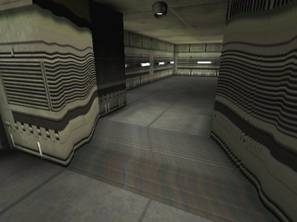
#Creating_the_Basic_World_Space基礎世界空間の構築
あなたの世界空間のために既存の空間を切り取るために必要なツールは [Builder Brushes] (ビルダーブラシ）です。[Brush] (ブラシ)とは基礎的な幾何的プリミティブで、あなたのいるレベルにおいて様々な形に構築して世界空間から削ったり、そこに足したりできます。ツール バーの左側に [Brush Builder] (ブラシ ビルダー)ボタンがあります： ご覧のとおりに、様々な Brush Primitives (ブラシ プリミティブ)があり、[ShapeEditor] (形エディター)を使ってあなた独自の形を構築できます。ただしこのツールは信頼し切れるまでにはいたらず、注意して使う必要があります。殆どすべてのレベルにおいて、多分大きなボックスを減らした状態ではじめたいことでしょう。[CubeBuilder Brush] (キューブ ビルダーブラシ)を右クリックしてください。 [CubeBuilder] (キューブビルダー)ウィンドウが現れます。
ご覧のとおりに、様々な Brush Primitives (ブラシ プリミティブ)があり、[ShapeEditor] (形エディター)を使ってあなた独自の形を構築できます。ただしこのツールは信頼し切れるまでにはいたらず、注意して使う必要があります。殆どすべてのレベルにおいて、多分大きなボックスを減らした状態ではじめたいことでしょう。[CubeBuilder Brush] (キューブ ビルダーブラシ)を右クリックしてください。 [CubeBuilder] (キューブビルダー)ウィンドウが現れます。
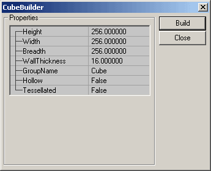
ここで寸法やその他の属性の設定ができます。このはじめの減算には、大きな [Ｃube] （キューブ、立方体）を設定することだけが重要です（あなたのすべてのレベルにおいて十分な大きさにしてください）。赤い [Builder Brush] （ビルダーブラシ）は [CubeBuilder] ウィンドウの中の [Build] ボタンを押すとサイズを変えます。 ブラシを目的の位置に移動したら [Subtract] （減算）ボタンを使ってあなたの空間を切り取ってください。Consolidated Solid Geometry(構成立体表現)を構築します。この CSG は通常 BSP (空間分割法)と呼ばれています。これらの言葉の詳細な記述は 「BSPブラシ チュートリアル」 に載っています。
ブラシを目的の位置に移動したら [Subtract] （減算）ボタンを使ってあなたの空間を切り取ってください。Consolidated Solid Geometry(構成立体表現)を構築します。この CSG は通常 BSP (空間分割法)と呼ばれています。これらの言葉の詳細な記述は 「BSPブラシ チュートリアル」 に載っています。

表面テクスチャーを変更
多分画面にデフォルトのグレーのバブルのテクスチャーが横に繰り返し現れている大きな箱が見えるのではないかと思います。減算されたあるいは加算されたＢＳＰジオメトリは [TextureBrowser]（テクスチャー ブラウザ）の中で選択された[Texture](テクスチャー)を表示します。テクスチャーを変えるには、今新しく構築したＢＳＰボックスの全表面をまず選択してください(便法としては、表面をひとつ選択してSHIFT＋ｂのキーを押してください)。次に [Texture Browser] を開いて [Texture] を選択してください。 [Texture Browser] を開くにはどれかブラウザをオープンして、[Texture] のタブをクリックしてください。あるいはとトップ メニュー バーにある [Texture] のアイコンをクリックしてもできます。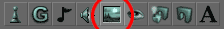
作ったレベルをチェック
あなたのレベルを試す前に、PlayerStart（プレーヤスタート地点）を追加する必要があります。あなたのキャラクターが誕生する場所を作るためです。お好きな場所で右クリックして [Add Player Start] をリストから選択してください。そうするとあなたのレベルに操縦桿ジョイスティックが現れます。これがPlayerStart（プレーヤスタート地点）です。PlayerStartがレベルの表面に比較的近いように設定してください。あまり離れているとコンパイル時にレベルからエラーが発生します。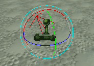
あなたの世界に Light (ライト)を加えるいい機会です。ライトを設置したいところで右クリックして [Add Light] (ライト追加)のオプションを選択してください。別な方法として、L のキーを押したまま左クリックすることもできます。どのアクタ(レベルにあなたが配置する殆どすべてのものを指します)のプロパティーも[Ｆ４]キーを押すとオープンします。 LightColor (ライトの色)のロールアウトの下でライトの基本設定が調整できます。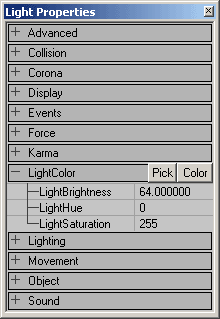
さあレベルを実際に作動させるまであと一息。ただ単に [Ｒebuild all] (すべてをリビルド)ボタンをヒットしてライト効果やジオメトリを計算しながらすべてがコンパイルされるのを待った後で, [Play Map!] (プレイ マップ) ボタンをヒット。.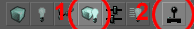
レベルに追加
Level (レベル)への追加方法はたくさんあります。例えば更に正のそして負のＢＳＰジオメトリーの両方あるいはどちらかを追加したり、StaticMeshes (静的メッシュ)を配置したり、テレインを構築したり、ほかの特別なジオメトリの種類を追加することまでできます。下記にどうやってこれらのジオメトリ タイプを追加できるかが説明してあります。新しいＢＳＰブラシを加えてみましょう
追加ブラシを新しく作るとき(正であれ負であれ)下記のガイドラインを守ってください。- 第一ルール：いつでもグリッドを [On](オン)にしておいてください。
- ＢＳＰブラシを追加あるいは削除する前にIntersect（交差）、Deintersect（非交差）の作業を必ず行ってください。
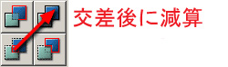
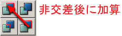
さらに複雑な Builder Brushes (ビルダー ブラシ)を [Intersect] や [Deintersect] ボタンを使って作ることができます。 [Intersect] は Builder Brush 分の空間を削除空間から除去し、[Deintersect] は Builder Brush 分の空間を追加空間から除去するということを記憶に留めてください。- ゲームを作動させる前にマップを再ビルドしてください。
StaticMeshes （静的メッシュ）の配置
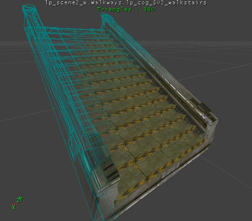
StaticMeshes（静的メッシュ）とは3DS Max 、MayaやLightwaveなどの他社製品によって構築されたジオメトリであなたのレベルに追加することができます。様々な用途において主要な装飾要素として使えます。StaticMesh を配置するには、ブラウザ ウィンドウの, [StaticMesh] タブをクリックして、またはトップメニュー バーの [StaticMesh Browser](静的メッシュ ブラウザ)ボタンをクリックして[StaticMesh Browser]を開いてください。 つぎに[StaticMesh Browser]の右側からお好みの[StaticMesh]を選択してください。選択後は右クリックによってレベルに追加できます。
StaticMeshesは便利な構造をしていて、動かしやすく、回転させることも、拡大縮小することも、そのテクスチャーをアンリアル エド上で交換することもできます。 StaticMeshesのことをもっと知りたい方は下記のドキュメントをご覧になることをお勧めいたします。
つぎに[StaticMesh Browser]の右側からお好みの[StaticMesh]を選択してください。選択後は右クリックによってレベルに追加できます。
StaticMeshesは便利な構造をしていて、動かしやすく、回転させることも、拡大縮小することも、そのテクスチャーをアンリアル エド上で交換することもできます。 StaticMeshesのことをもっと知りたい方は下記のドキュメントをご覧になることをお勧めいたします。 - 「静的メッシュのチュートリアル」
- 「レベル最適化」 （レベル最適化法ドキュメントのStaticMeshのセクション）
テレインの作成
 テレインもレベルの構築に便利なジオメトリです。すばやく簡単に大きな戸外の環境のフレームワークを作成するのに役立ちます。テレインの作り方の詳細は下記の文書をお読みください。
テレインもレベルの構築に便利なジオメトリです。すばやく簡単に大きな戸外の環境のフレームワークを作成するのに役立ちます。テレインの作り方の詳細は下記の文書をお読みください。 - 「テレイン」
- 「レベル最適化」 （レベル最適化法ドキュメントのテレインのセクション）
- ExampleMapsCaverns（MapsCavernsの例)
ボックス選択
アクタは単にその上でクリックすることで選択できます。複数のアクタを選択する場合には選択ボックス法を使ってください。この方法はエディターのモードに関係なく同じです。CTRL キーと ALT キーを押して、左クリックしたまま 2D viewports （2次元ビュー ポート)内のどこへでもドラッグしてください(３Ｄビュー ポートではこの方法は使えません)。引きずっているとボックスが現れ、クリックした地点から始まってそのときのマウスの位置に終わる形で描かれます。例えば：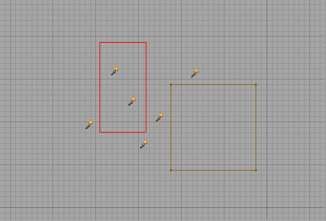
マウスのボタンから手を離すとこういう風に見えます。 そういうことで、ボタンから手を離したときのボックスの内側のアクタがみな選択されました。
そういうことで、ボタンから手を離したときのボックスの内側のアクタがみな選択されました。
ボックスを使ってアクタの追加選択
現在の選択に加えてアクタを選択したい場合は、Shiftキーを押したまま上記のボックス選択を行ってください。つまり、 Ctrl と Alt に Shift を皆押したままボックスでアクタを囲んでください。 それではここで実際にShift （シフト）を使ってのボックス選択をご覧に入れます。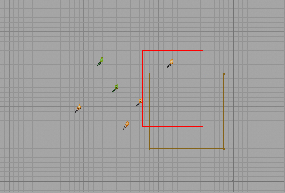
スクリーン上では同じに見えますが、キーから手を離すとはじめに選択したアクタたちを選択したまま新しいアクタたちを選択に加えています。ご覧ください： ブラシはその原点がボックスで囲まれたときだけ選択されます。ブラシの頂点が囲まれていても原点が囲まれていなければブラシは選択されません。頂点は、頂点操作モードのときに重要です。
ブラシはその原点がボックスで囲まれたときだけ選択されます。ブラシの頂点が囲まれていても原点が囲まれていなければブラシは選択されません。頂点は、頂点操作モードのときに重要です。
ボックス選択で頂点操作
ボックス選択は頂点操作を行うときに最適です。ブラシの片側の頂点を皆選んでブラシを動かすのにボックス選択法がなければとても不便です。ではここでその方法をご紹介しましょう。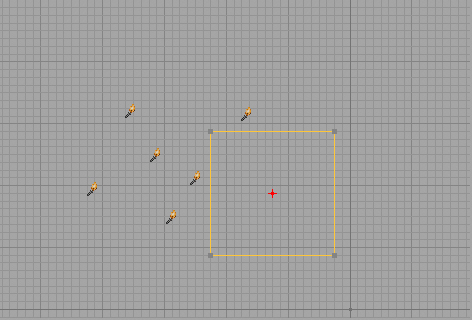
さて、キューブの右側の頂点を皆選んでその面をドラッグしたいとします。ボックスで右側の頂点を皆囲んでみましょう。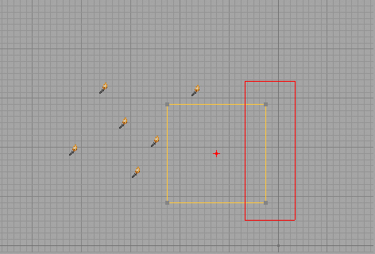
ボタンから手を離したときの結果をご覧ください：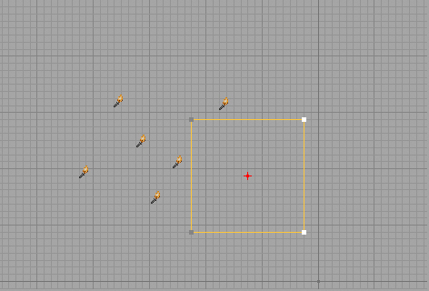
こうやって今囲んだ頂点を普通の点のようにドラッグすることができ、そのブラシの一面を簡単にドラッグできます。よくある落とし穴
アンリアル エドは他の複雑なアプリケーションと同様に微妙な要素を持っています。ここに記したのは殆どみなが失敗を通して覚える微妙なうまい使い方です。複数のパッケージに同じ名前をつけないこと
StaticMeshes （静的メッシュ）、Textures （テクスチャー）、Animations （アニメーション）を保存したファイルは packages (パッケージ)と呼ばれます。時としてレベル上の風景の中の同じ物体のためのテクスチャー パッケージと静的メッシュ パッケージを同じ名前で呼ぶことが論理的選択であるように思われることもあるでしょう（たとえばメッシュ ファイルを Trees.usx と名づけ、テクスチャー ファイルを Trees.utx という名で保存したとします）。するとアンリアル エドは混乱し、どっちがどっちかわからなくなり、 テクスチャー パッケージが静的メッシュブラウザに現れたり、逆のことが起こったりして、最終的に両方のパッケージが損なわれたりします。通常、この問題の解決には両方のパッケージを削除して再度ソース アートから作り直すほかに方法がありません。必ずパッケージを保存すること
StaticMesh パッケージをせっかく作ったのにレベルをスタートしてみると現れない、そんなときはゲームをランさせる前にパッケージを保存し忘れた可能性が大です。この問題解決は簡単です。[StaticMesh Browser] か [Texture Browser] の [File] メニューから [Save] を選択してください（ただし独自の名前をつけることを忘れずに）。パッケージが保存されていなければアンリアル エド上でパッケージの中身を表示することができません。アニメーションをリンクすることを忘れずに
あなたの製作したアニメーションがゲームに出てこない、しかも、あるいは [Animation Browser]（アニメーション ブラウザ）から消えてしまっているというときの原因は大抵アニメーションのメッシュへのリンクのし忘れです。この問題も解決は簡単です。[Link animation to mesh]（アニメーションをメッシュにリンク）ボタンをクリックしてください（下図に掲載）。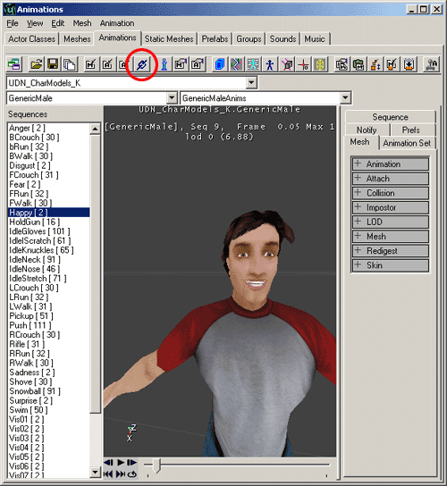
Ｓunlight(日光)を出現させる
SunLight （日光）を配置して明るさのプロパティーを高い値に設定したのにレベル上では明るくならない。こういうときはおそらく最初のBSP減算の表面設定を [Fake Backdrop.] （フェイク バックドロップ）にし忘れたときです。最初のBSP減算のすべての面を選択して [Surface Properties window] （表面プロパティー ウィンドウ）を開いて（ホット キーは[Ｆ５]） [Fake Backdrop] のボックスをチェックしてください。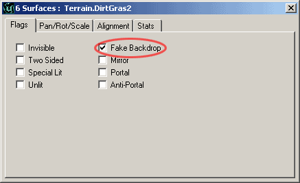
この設定をしないとＢＳＰ減算によるシャドウ効果で日光が影の影響を受けて効果を発しません。